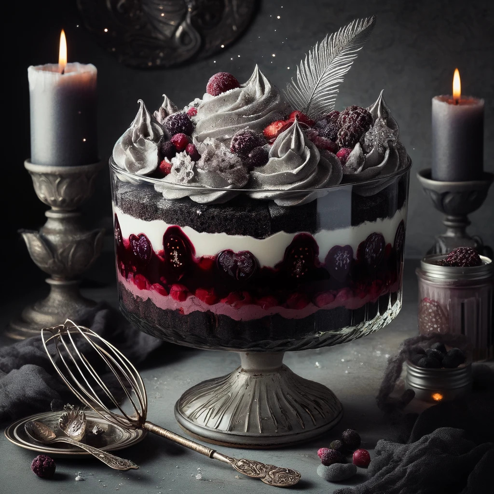

Mama and Papa's Bewitched Berry Trifle

Mama and Papa’s Amoreggiamento
In a kitchen where the spice of romance mingles with the chill of ghost stories, Mama and Papa conjure up a dessert that’s as layered as their love—complex, sweet, with just a hint of darkness. "Mama & Papa's Bewitched Berry Trifle" combines luscious berries, sinister spikes of cream, and chunks of velvet cake that hide whispers of forgotten love potions.
Ingredients
- 1 large velvet cake, sliced into cubes (dark as a starless night)
- 3 cups mixed berries (blackberries, raspberries, blueberries, cursed for extra flavor)
- 2 cups heavy cream (whipped into soft peaks like the ones in their tumultuous romance)
- 1/2 cup powdered sugar (as fine as the line between love and madness)
- 1 teaspoon vanilla extract (extracted under a full moon)
- 1/2 cup berry compote (simmered with the secrets of a thousand love stories)
- A few mint leaves (for a touch of freshness amidst the decay)
- Dark chocolate shavings (as bitter as an old argument)
Instructions
- Layer the Shadows: Begin by layering cubes of velvet cake at the bottom of a large, clear glass trifle bowl. This base represents the foundation of their love—deep, rich, and ever-present.
- Simmer the Secrets: Spoon a layer of the berry compote over the cake, letting the sweet and sour tales of yore seep into the crevices. Scatter a generous handful of fresh berries on top, each one bursting with stories best told in hushed tones.
- Whip the Whispers: In a chilled bowl, whip the heavy cream with powdered sugar and vanilla until it forms soft, inviting peaks. This cream is like their love: sweet and enveloping, but with the potential to turn if not handled with care.
- Build the Bewitchment: Gently spread a thick layer of whipped cream over the berries, smoothing it out to cover hidden secrets and buried tales. Repeat the layering—cake, compote, berries, and cream—until the bowl is nearly full.
- Garnish with a Wink: To finish, sprinkle the top with dark chocolate shavings and a few mint leaves, like the final words in a love letter written in the dim light of their enchanted kitchen.
- Let the Love Brew: Refrigerate the trifle for a few hours, allowing the layers to meld like a long marriage—full of flavor, surprises, and a touch of magic.
Serve "Mama & Papa's Bewitched Berry Trifle" with a side of laughter and a knowing look. Each spoonful is a testament to their love—a mix of sweet, sour, and the undeniable spice of a life well-lived together. Perfect for an evening where tales are spun and love is celebrated under the watchful eyes of the stars.
If You Desire an Enchantment
In the realm of hearts and whispered wishes, a trifle can be more than just a dessert—it can be a vessel for charms and enchantments. Those seeking to captivate a newfound love may wish to stir in these mystical additions, each imbued with mythical properties.
Enchanted Additions
- 9 oz Dragonberry Compote
- 3 oz Elixir of Eros
- 1 Phoenix Feather Whisk
- 6 Starlight Crystals
Directions for Magical Preparation
- Conjure with Care: As you add each enchanted ingredient, visualize your intentions clearly. Chant softly of love and longing, weaving your wishes into the very essence of the trifle.
- Present with Panache: Serve this magical dessert under the glow of enchanted candles, creating an atmosphere ripe for romance and mystique. Let the flickering light dance across the trifle, casting spells of allure and attraction.
"Mama & Papa's Bewitched Berry Trifle," now laden with mystical elements, becomes more than just a meal—it’s a ritual of romance, a dessert designed to dazzle and bewitch. Share it with someone special, and watch as the enchanted evening unfolds, wrapped in sweetness and shrouded in mystery.